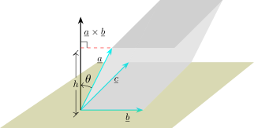

4.8 Triple Products
The product \(\underline {a}\cdot (\underline {b}\times \underline {c})\) is called the scalar triple product of the vectors \(\underline {a}, \underline {b}\) and \(\underline {c}\). Its geometric significance can be seen by considering the parallel piped determined by the vectors \(\underline {a}, \underline {b}\) and \(\underline {c}\).

\begin {align*} h & = \left |\left |\underline {a}\right |\cos \theta \right |\hspace {0.2cm}\text {Area of base}\hspace {0.2cm} = \left |\underline {b}\times \underline {c}\right |\\\\ V & = \left |\underline {a}\right |\left |\cos \theta \right |\left |\underline {b}\times \underline {c}\right |\\ & = \left |\left |\underline {a}\right |\left |\underline {b}\times \underline {c}\right |\cos \theta \right |\\ & = \left |\underline {a} \cdot (\underline {b}\times \underline {c})\right | \end {align*}
Suppose \(\underline {a}, \underline {b}\) and \(\underline {c}\) are given in component form. \begin {align*} \underline {a} & = a_1\textbf {i} + a_2\textbf {j} + a_3\textbf {k}\\ \underline {b} & = b_1\textbf {i} + b_2\textbf {j} + b_3\textbf {k}\\ \underline {c} & = c_1\textbf {i} + c_2\textbf {j} + c_3\textbf {k} \end {align*}
\[\text {then}\hspace {1cm}\underline {a}\cdot (\underline {b} \times \underline {c}) = \begin {vmatrix} a_1 & a_2 & a_3\\ b_1 & b_2 & b_3\\ c_1 & c_2 & c_3 \end {vmatrix}\]
Proof. Write \(\underline {b}\times \underline {c}\) in component form first. By the theorem on the vector product, \[\underline {b}\times \underline {c} = \big (b_2c_3 - b_3c_2\big )\textbf {i} - \big (b_1c_3 - b_3c_1\big )\textbf {j} + \big (b_1c_2 - b_2c_1\big )\textbf {k}.\]
Now take the dot product with \(\underline {a}\). Since the dot product of vectors in component form multiplies corresponding components and adds, \begin {align*} \underline {a}\cdot \big (\underline {b}\times \underline {c}\big ) &= a_1\big (b_2c_3 - b_3c_2\big ) - a_2\big (b_1c_3 - b_3c_1\big ) + a_3\big (b_1c_2 - b_2c_1\big )\\ &= a_1\begin {vmatrix} b_2 & b_3\\ c_2 & c_3\end {vmatrix} - a_2\begin {vmatrix} b_1 & b_3\\ c_1 & c_3\end {vmatrix} + a_3\begin {vmatrix} b_1 & b_2\\ c_1 & c_2\end {vmatrix} \end {align*}
The right-hand side is precisely the cofactor expansion along the first row of \[\begin {vmatrix} a_1 & a_2 & a_3\\ b_1 & b_2 & b_3\\ c_1 & c_2 & c_3 \end {vmatrix},\] which proves the claim. □
Remark. Two consequences are worth recording, and both follow from properties of determinants rather than from any new geometry.
Interchanging two rows of a determinant changes its sign, so interchanging any two of the three vectors reverses the sign of the triple product; a cyclic permutation interchanges two rows twice and therefore leaves it unchanged: \[\underline {a}\cdot \big (\underline {b}\times \underline {c}\big ) = \underline {b}\cdot \big (\underline {c}\times \underline {a}\big ) = \underline {c}\cdot \big (\underline {a}\times \underline {b}\big ).\]
A determinant with two equal rows is zero, so the triple product vanishes whenever two of the vectors are equal — and, more usefully, it vanishes exactly when the three vectors are coplanar, since a parallelepiped with zero volume is a flat one. That is the test used in the example below.
Use the scalar triple product to show that the vectors \(\underline {a} = \langle 1 , 4, -7\rangle \) , \(\underline {b} = \langle 2, -1, 4\rangle \) and \(\underline {c} = \langle 0,-9,18\rangle \) are coplaner. i.e they lie on the same plane.
Solution.
If they lie on the same plane then the volume of the parallolopiped they determine.
i.e \(\underline {a} \cdot (\underline {b}\times \underline {c}) = 0\)
\begin {align*} \underline {a} \cdot (\underline {b}\times \underline {c}) & = \begin {vmatrix} 1 & 4 & -7\\ 2 & -1 & 4\\ 0 & -9 & 18\\ \end {vmatrix} = 18 - 144 -7(-8)\\ & = 0 \end {align*}
\(\therefore \hspace {0.6cm} \underline {a}, \underline {b}\) and \(\underline {c}\) are coplaner.
- 1.
- Find a vector equation and parametric equations for the line that passes through the point \((5,1,3)\) and is parallel to the vector \(\textbf {i} + 4\textbf {j} - 2\textbf {k}\).
- 2.
- Find two other points on the line
Solution.
- 1.
- \begin {align*} \overline {r} & = \underline {P} + t\overrightarrow {PQ}\\ & = \langle 5,1,3\rangle + t\langle \textbf {i} + 4\textbf {j} - 2\textbf {k}\rangle \\ \implies \hspace {0.5cm} \overline {r} & = (5 + t)\textbf {i} + (1 + 4t)\textbf {j} + (3 - 2t)\textbf {k} \end {align*}
Parametric equations \begin {align*} x = 5 + t\hspace {0.2cm} , \hspace {0.2cm}& y = 1 + 4t\hspace {0.2cm},\hspace {0.2cm} z = 3-2t\\ x = x_0 + at\hspace {0.2cm} ,\hspace {0.2cm} & y = y_0 + bt\hspace {0.2cm},\hspace {0.2cm} z = z_0 + ct \end {align*}
\(P(x_0,y_0,z_0)\) lies on the line \(L\) parallel the vector \(\overline {V} = a\textbf {i} + b\textbf {j} + c\textbf {k}\) \(\hspace {0.6cm} \overline {r} = \overline {r}_0 + t \overline {V}\), where \(\overline {r}_0 = \overrightarrow {OP}\).
- 2.
- \(x = 5 + t\hspace {0.2cm} , \hspace {0.2cm} y = 1 + 4t\hspace {0.2cm} , \hspace {0.2cm} z = 3 - 2t\)
\(t = 1 \implies x = 6\hspace {0.2cm} , \hspace {0.2cm} y = 5 \hspace {0.2cm} , \hspace {0.2cm} z = 1 \implies (6,5,1)\) also lies on the line
\(t = -1 \implies x = 4\hspace {0.2cm} , \hspace {0.2cm} y = -3\hspace {0.2cm} , \hspace {0.2cm} z = 5 \implies (4,-3, 5)\)
- 1.
-
- (a)
- Find parametric equations and symmetric equations of the line that passes through the points \(A(2,4,-3)\) and \(B(3,-1,1)\).
- (b)
- At what point does this line intersect the \(xy -\) plane?
- 2.
- Show that the lines \(L_1\) and \(L_2\) with parametric equations \[L_1 : \hspace {0.2cm} x = 1 + t\hspace {0.2cm} , \hspace {0.2cm} y = -2 + 3t \hspace {0.2cm} , \hspace {0.2cm} z = 4 -t\] \[L_2 : \hspace {0.2cm} x = 2s \hspace {0.2cm} , \hspace {0.2cm} y = 3 + s \hspace {0.2cm} , \hspace {0.2cm} z = -3 + 4s\] are skew.
Solution.
Part 1
- 1.
- \(\overline {V} = \overrightarrow {AB} = \textbf {i} - 5\textbf {j} + 4\textbf {k}\)
\(x = x_0 + at\hspace {0.2cm} , \hspace {0.2cm} y = y_0 + bt\hspace {0.2cm} , \hspace {0.2cm} z = z_0 + ct\)
\(x = 2 + t \hspace {0.2cm} , \hspace {0.2cm} y = 4 - 5t \hspace {0.2cm} , \hspace {0.2cm} z = -3 + 4t\)
\(\displaystyle {\frac {x - 2}{1} = \frac {y - 4}{-5} = \frac {z + 3}{4}}\)
- 2.
- In \(xy - \) plane \(z = 0\), so \(\displaystyle {x - 2 = \frac {y - 4}{-5} = \frac {3}{4}}\)
\[x - 2 = \frac {3}{4}\hspace {0.2cm} \& \hspace {0.2cm} \frac {y - 4}{-5} = \frac {3}{4}\]
\[ x = \frac {11}{4} \hspace {0.3cm} , \hspace {0.3cm} y = \frac {1}{4}\]
\(P\Big (\dfrac {11}{4}\hspace {0.2cm}, \hspace {0.2cm} \dfrac {1}{4}\hspace {0.2cm} , \hspace {0.2cm} 0\Big )\) intersection.
Note. Lines in space that do not intersect are not parallel and called skew lines, such lines can not lie in the same plane.
Part 2
\(L_1\) has \(\overrightarrow {V}_1 = \textbf {i} + 3\textbf {j} - \textbf {k}\), \(L_2\) has \(\overrightarrow {V}_2 = 2\textbf {i} + \textbf {j} + 4\textbf {k}\)
Clearly the two vectors are not parallel since there is not scalar say \(\alpha \), such that \(\overline {V}_1 = \alpha \overline {V}_2\). Therefore \(L_1\) and \(L_2\) are not parallel.
If \(L_1\) and \(L_2\) intersect, then there are values of \(s\) and \(t\) such that \((I)\hspace {0.3cm} \cdots \cdots \hspace {0.4cm} 1 + t = 2s\), \((II)\hspace {0.3cm} \cdots \cdots \hspace {0.4cm} -2 + 3t = 3 + 2,\) \((III) \hspace {0.3cm} \cdots \cdots \hspace {0.3cm} 4 -t = -3 + 4s\)
\((I) \implies \hspace {0.3cm} t = 2s - 1 \hspace {0.3cm}\) substituting in \((II)\)
\[ - 2 + 3(2s - 1) = 3 + s\] \[\implies \hspace {0.4cm} 6s - s = 3 + 2 + 3\] \[\implies \hspace {0.4cm} 5s = 8 \implies s = \frac {8}{5}\]
and \(t = 2\Big (\dfrac {8}{5}\Big ) - 1 = \dfrac {16}{5} - 1 = \dfrac {11}{5}\)
Checking if \((III)\) is satisfied \[4 - \frac {11}{5} = -3 + 4\Big (\dfrac {8}{5}\Big )\] \[\frac {9}{5}\neq - 3 + \frac {32}{5}\]
Since \((III)\) is not satisfied by the two values of \(s\) and \(t\), then \(L_1\) and \(L_2\) do not intersect. Therefore \(L_1\) and \(L_2\) are skew lines.
Questions on this section
Stuck on something here? Ask below and it stays attached to this topic.